Making the IRS app easy to use
IRS2GO is the IRS's official app. It was rated 2.8 stars, and 45% of people quit before finishing a task. I redesigned the three things people open it for: checking a refund, making a payment and finding free tax help.
usability score: 31.3 → 78.25!
- My role
- UX/UI Designer, solo
- Timeline
- 4 months, 2025
- Context
- HCI course project
- Platform
- iOS and Android app
What changed
The short version
A confusing government app
Seven equal menu items, vague statuses like "Return Received", and payments that jumped out to the website halfway through.
Research to tested redesign
Read 150+ reviews, interviewed taxpayers and watched people use the app. Then I redesigned the 3 core tasks and tested before and after.
Usability more than doubled
The SUS score went from 31.3 ("Poor") to 78.25 ("Excellent"), and every redesigned screen meets WCAG 2.1 AA.
Five steps, from reviews to a tested app
Research: find where it breaks
I read 150+ app reviews, interviewed taxpayers, asked people to complete tasks in the old app, and checked it against 10 standard usability rules (Nielsen's heuristics).
- Refunds: a vague status with no date, and forms with no format hints. 68% of people who tried left without a clear answer.
- Payments: the app sent people to the website mid-task, with no summary before paying.
- Tax help: the office finder showed no results for valid zip codes.
- Accessibility: none of the original screens met WCAG 2.1 AA.
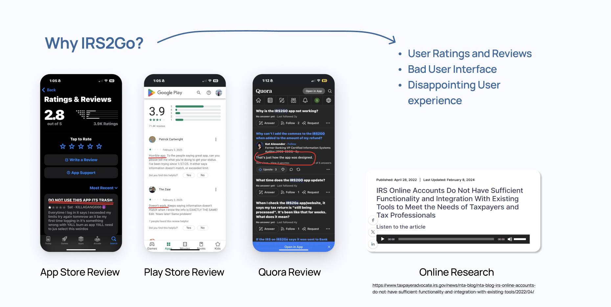
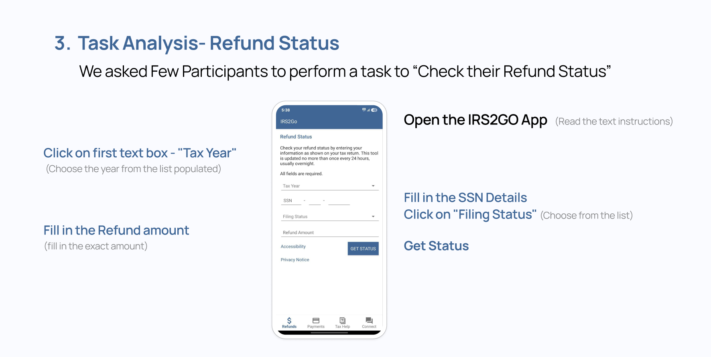
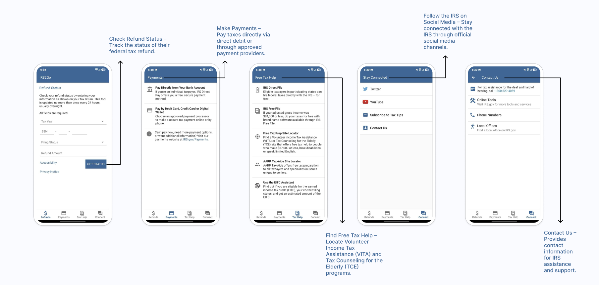
Who I designed for
Meet Alex, 29
He filed three weeks ago and is waiting on a $2,100 refund to pay a vet bill. He's not a tax expert and has never used a government app. He just wants to know one thing: where is my money?
- Can't find itSeven menu items all look equally important.
- Gets blocked"Invalid entry", three times, with no hint.
- Gets no answer"Return Received." No date, no next step.
- Gives upHelp opens a slow website. He Googles it instead.
Ideas: sketch the fixes
I storyboarded each task as a short comic first, so every idea had to fix a problem I had actually seen.
- 3 clear choices on Home instead of 7 equal menu items.
- A refund timeline: Received, Approved, Sent.
- Check before you pay: a summary before any payment.
- No account needed to check a refund.
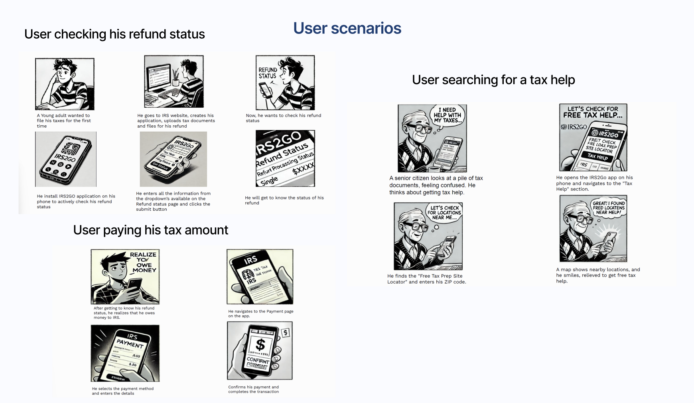
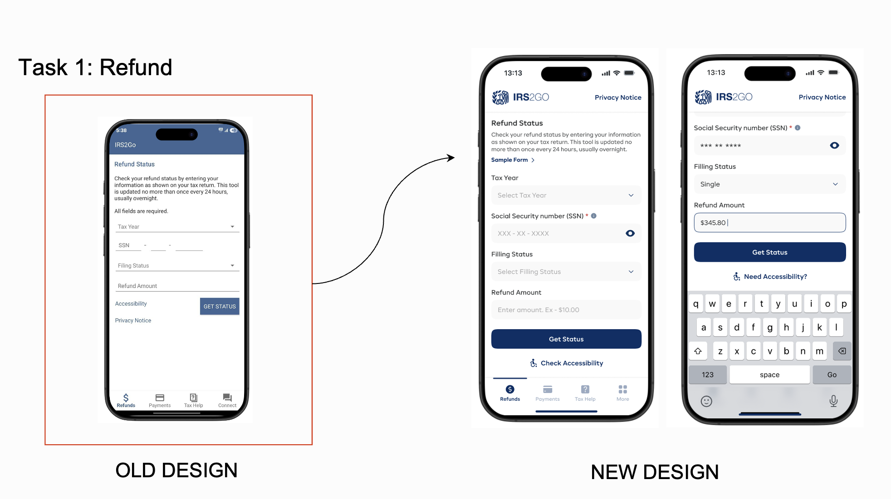
Final design: every task finishes inside the app
Clear labels, one main action per screen, big tap targets, and a tab bar (Refunds, Payments, Tax Help, More) so no task is buried.
Drag the slider to compare the refund form. Before, the rules only appeared after an error. Now every field is labelled and help comes first.
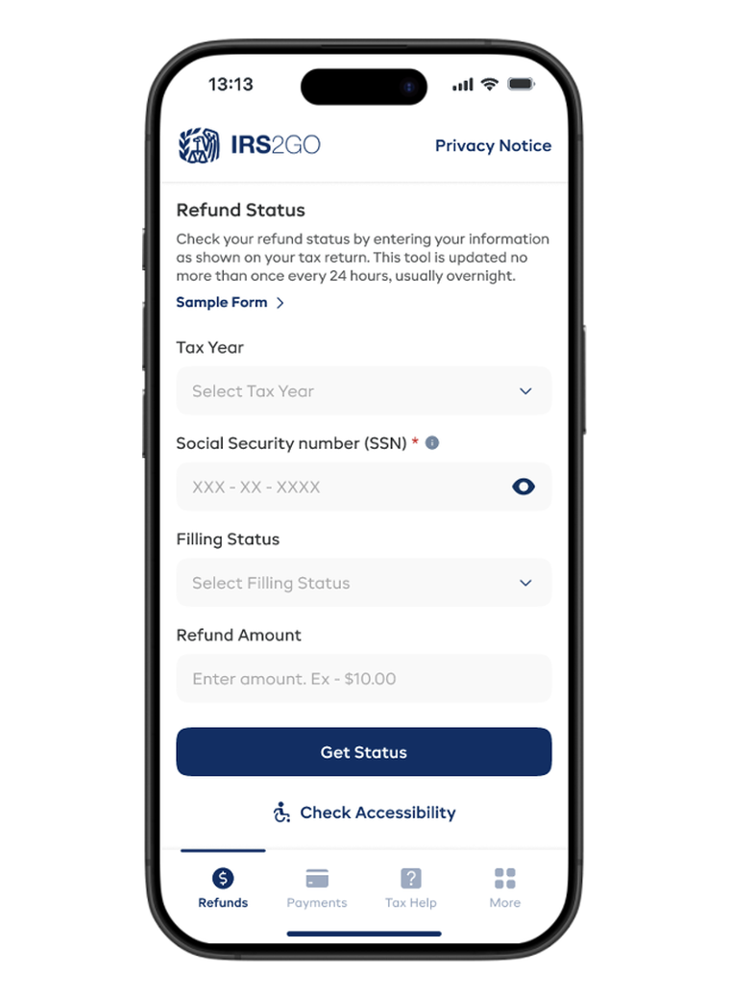
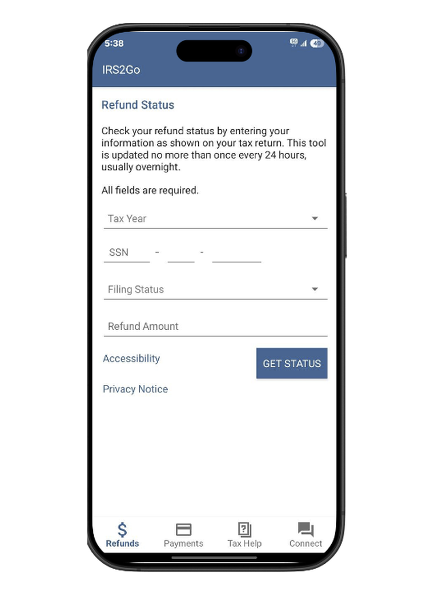
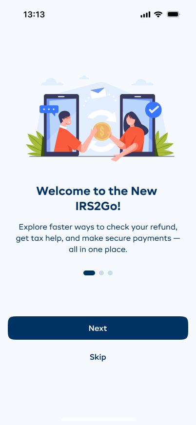
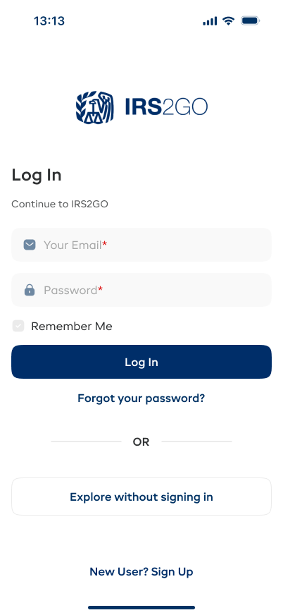
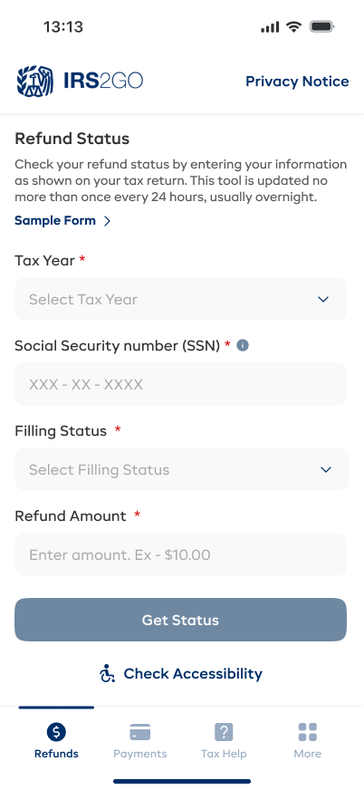
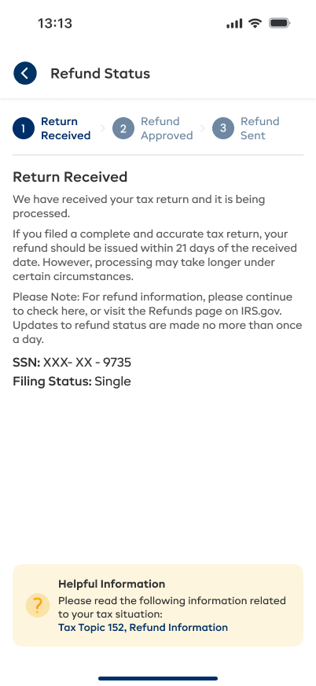
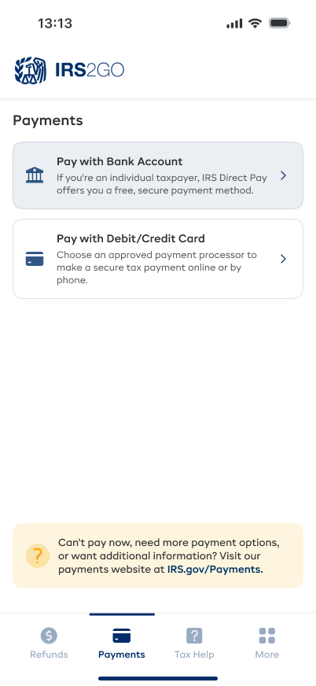
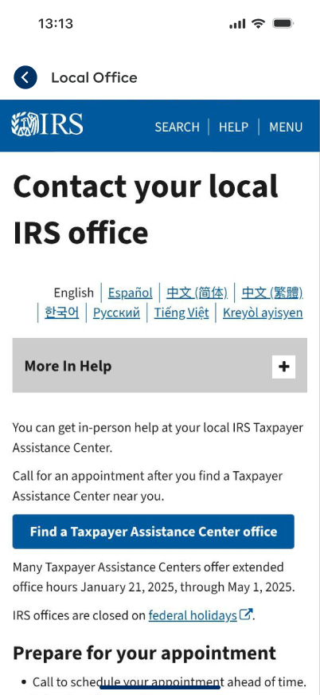
Testing: did it work?
People did the same tasks on the old app and the new one while thinking out loud, then filled in the System Usability Scale, a standard 10-question survey scored out of 100. The score went from 31.3 to 78.25.
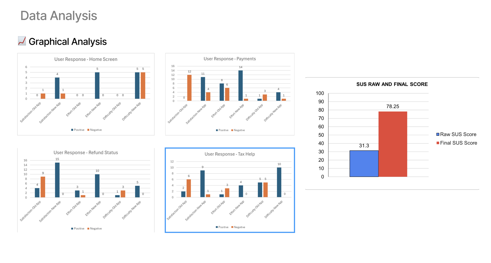
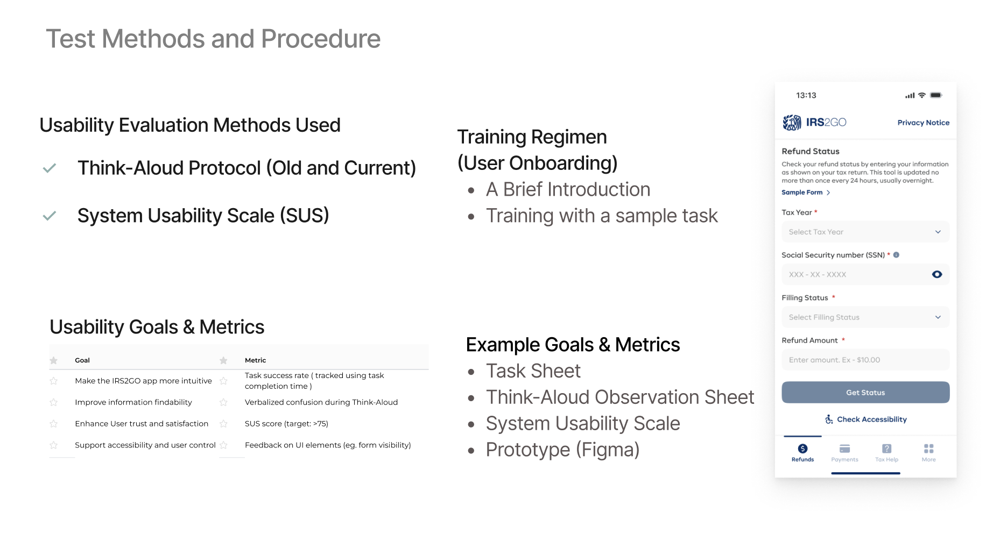
What testing showed
- People wouldn't log in just to check a refund, and many quit at the login screen.
- 3 of 6 people hesitated to pay because they couldn't see a summary first.
What I changed
- "Explore without signing in" became the main button. Nobody dropped off at login after that.
- A confirmation screen before paying. After that, 0 of 6 were worried about paying.
When trust is the product
- 31.3 → 78.25Usability score, from "Poor" to "Excellent".
- WCAG 2.1 AAOn every redesigned screen.
- 0 redirectsAll three tasks finish inside the app.
- No accountNeeded to check a refund.
Bad UX costs trust
In a government app, a confusing screen makes people doubt the government itself.
Guests first
Letting people in without an account isn't a shortcut. It's how they reach the answer.
Confirm what matters
A summary before paying calmed people more than any form design could.
Try the Figma prototype ↗"When I saw the new home screen, I immediately knew what to do. That's never happened with a government app before."
Usability testing participant